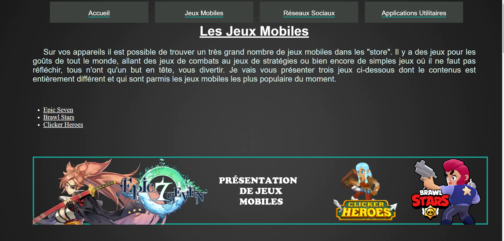

| +33 6 13 53 01 25 | • |
axelaxelc@aol.fr
|
| GitHub | • |
| +33 6 13 53 01 25 | • |
axelaxelc@aol.fr
|
| GitHub | • |
Le développement informatique est un domaine que je manipule depuis le collège, avec la réalisation d'un labyrinthe sur le logiciel Scratch. Les années suivantes, j'ai pris part à l'option informatique de mon lycée, où j'ai réalisé des jeux sur une vieille version de Game Maker Studio. Durant ces cours, j'ai également eu mes premiers projets en HTML et CSS. De manière extra-scolaire, j'ai aussi pris part durant la 1ère au développement d'un robot de combat type "sumo" pour participer au tournois TechnoBot de la ville de Yutz. Bien qu'ayant très peu pris part à la modélisation 3D du robot, ma tâche principale a été de développer l'algorithme du robot, en langage Arduino. Durant la Terminale j'ai également fais du python extrèmement basique sur l'environnement EduPython.
Suite à l'obtention de mon BAC Scientifique, Sciences de l'Ingénieur, je me suis dirigé vers l'Université de Lorraine, et plus précisement l'Institut Universitaire de Technologie de Metz, où j'ai pu débuter mon cycle supérieur avec un Diplôme Universitaire de Technologie sur deux ans. Durant cette formation, je me suis familiarisé avec un grand nombre de langages et outils, tel que ;
Décidé à continuer les études au moins une année supplémentaire, je me suis tourné vers le domaine qui m'intéressait le plus parmis ceux découvert durant le DUT, et le choix c'est rapidement tourné vers le Web. Ainsi, j'étudie actuellement au sein de l'IUT de Metz, dans la Licence Professionnelle Développeur Web et Mobile pour le Commerce Electronique.
Afin de valider ma Licence Professionnelle, il me faut réaliser un stage de 16 semaines en entreprise. Ainsi, je suis actuellement à la recherche d'un stage dans une entreprise web professionnelle qui pourras m'apporter connaissances et expériences dans le domaine, mais également sur le monde du travail.
D'un point de vu plus personnel, j'apprécie lire des oeuvres Japonaises et Sud-Coréennes ( Mangas et Manhwas ), plus particulièrement les séries d'actions et de fantastiques. Pendant mon temps libre, j'apprécie réaliser des montages photos et vidéos, bien qu'à un niveau amateur, et les partager avec mon cercle d'amis où dans des communautés, notamment via l'application Discord.
Projet en Cours
Sujet au choix; reprendre mon projet personnel d'un site de référence pour un jeu vidéo mobile et le reprogrammer sous le framework Angular.
Projet en Cours
Site de e-commerce programmé en PHP. Site de vente en ligne de mangas avec système de paniers, système de comptes utilisateurs et administrateurs, et système de traduction comprennant les langages Français et Anglais. Les mangas sont extraits depuis une api publique api.mangadex.org et sont insérés dans une base de données MySQL à l'aide d'un script réalisé sur NodeJS, ce qui a facilité le développement de ce dernier grâce à une poignée de modules NPM publique.
Réalisation d'une application mobile développé avec React offrant un service de tourisme sur Metz. Certains lieux populaires sont indiqués et il est possible d'y trouver plusieurs informations à leurs propros. La géolocalisation de l'utilisateur est indiquée, et si elle se trouve proche d'un lieu dit, l'appareil mobile vibre à fréquences régulières. Les données sont stockés localement dans des json, dû au manque de temps pour développer un back-end (projet de 5 jours sur technologies inconnues).
Réalisation d'un forum entièrement en PHP, relié à une base de données relationnelle pour stocker les données utilisateurs et contenu du forum. Système de profil complexe avec pseudo, photo de profil, description, et mot de passe protégé dans la BDD via fonctions de hachage. Système de thèmes clair et sombre.
Deux images sont disponible, utilisez le carousel prévus à cet effet.

Site servant de référence avec des outils pour les joueurs du jeu mobile Nikke : Goddess of Victory. Il est accessible sur les services Pages de GitHub et CloudFlare.
Étant sur les Pages GitHub, le repository est publique et la communauté m'a déjà aidé sur certaines tâches, ce dont j'ai grandement apprécié et accepté à ce jour tout les pulls requests.
N'ayant pas connu Git à l'époque, rares sont les captures d'écrans de mes ancien projets.
Site avec sujet au choix, mais où il fallait avoir du contenu sur plusieurs pages HTML, tout en n'utilisant qu'une seule feuille de style.
Robot Sumo respectant un cahier des charges afin d'être éligible au tournois TechnoBot. Le robot ne pouvait pas faire plus que 16cm de longs ou large, hauteur infinie si besoin. Poid de moins de cinq kilo grammes. Et quant on le lançait, il fallait un délai de 5 secondes entre l'appuis sur l'interrupteur, et le moment où l'algorithme débute ( ce qui permet des combats sécurisés commençant au même instant pour les deux partis ).
Le chassis du robot a été modélisé en 3D et a été imprimé grâce à une imprimante 3D que possède le lycée. Le robot possède deux roues motrices en silicone, deux roues libres, 4 capteurs thermiques pour analyser l'arène et éviter de sortir, et 2 capteurs ultrasons pour trouver l'ennemi et lui foncer dessus dès que possible. Voir la répartition sur la photo ci-dessous.
L'algorithme du robot réalisé en Arduino était simple mais efficace : on vérifie qu'aucun capteur thermique ne voit la couleur blanche ( à savoir, la délimitation de l'arène ). Si c'est le cas, le robot roule à l'opposé du capteur signalant le problème. Sinon, le robot va tourner sur lui même jusqu'à trouver un ennemi. Une fois l'opposant détecté, tout droit vitesse maximal. Cet algorithme ce répétait à l'infinis toutes les dixièmes de secondes afin que le robot soit très réactif.
Deux images sont disponible, utilisez le carousel prévus à cet effet.